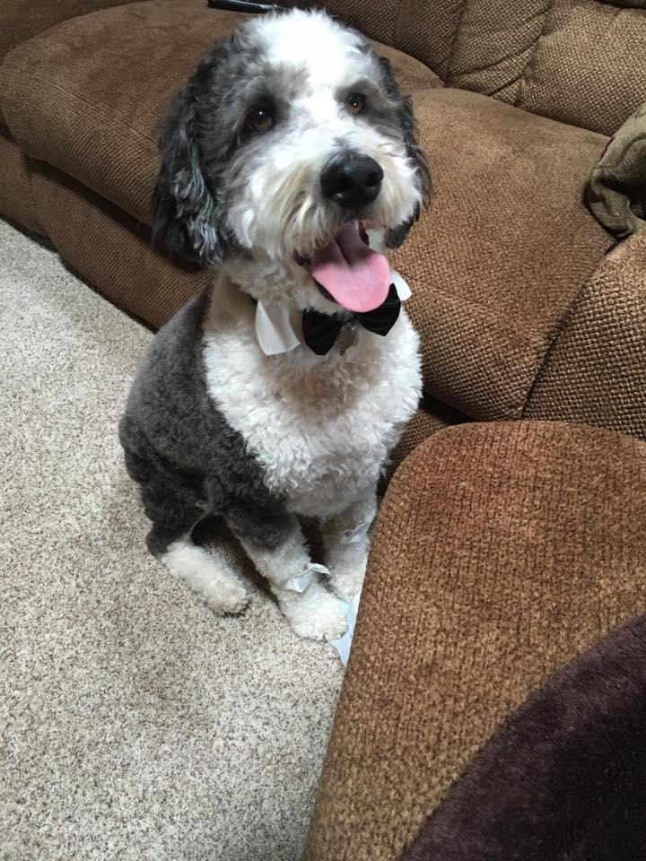

Jacob Leno
Student/Potter/Maker
I like working with my hands and I especially like to work with clay. I apprenticed at Saint John's Pottery. Now I am currently a student at Oregon State University pursuing a bachelor's degree in Computer Science. I will be graduating in the fall of 2018.

Brenna Leno
Seamstress/Youtube Star
I love quilting, sewing, knitting, crochet, machine embroidery and especially hand embroidery. I've had a life-long love of sewing and crafting. My mother taught me how to use a sewing machine when I was 8 years old and I've been addicted ever since!

Fella Leno
Manager
Cinderfella (Fella) is Jake and Brenna's 5 year old sheepadoodle (a hypoallergenic breed). He's a great supervisor. ;) And he KNOWS who's a good boy.